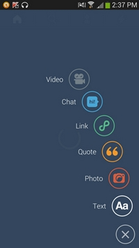

Le travail des images
Les icônes et les images font partie intégrante du design et de la mise en forme d'un site, qu'il soit orienté utilisation mobile ou ordinateur. Cependant, il est compliqué de faire la part des choses entre trop d'images et trop peu.
Si les images sont trop présentes, le résultat donnera une page beaucoup trop encombrée, et si le site est responsive, sur un mobile cela sera d'autant plus gênant dans la navigation. Au contraire, s'il n'y a pas assez d'images, il se peut que l'espace soit comblé par des textes trop longs, et le résultat sera le même. Il faut donc trouver le juste équilibre, en n'oubliant pas que des images ne doivent jamais être intégrées dans un site pour faire joli mais pour accompagner un propos.
Pour les icônes, étant donné que l'écran d'un appareil mobile est plus petit que celui d'un ordinateur, il faut qu'ils soient bien travaillés, explicites et compréhensibles même sur format réduit.
Tumblr
 L'application Tumblr, qui permet le partage de créations grapiques et vidéos entre autre, est un bon exemple pour ce critère. La page d'accueil ci-contre ne comporte que des icônes accompagnés d'un titre. Les icônes sont bien travaillés, ils sont visibles, lisibles et compréhensibles même sur un petit écran. De plus, ils sont assez gros pour pouvoir être sélectionnés facilement.
eFax
eFax est une application pour envoyer et recevoir des fax facilement. Les couleurs sont assez sombres, mais ce qui peut déranger le plus l'utilisateur sur ce contenu est le fond à pois noirs et gris. Les motifs de cette sorte, répétitifs, ont un côté épileptique qui peut grandement déranger la navigation. Pour rester dans des tons identiques, un fond uni noir ou gris aurait été plus à propos.